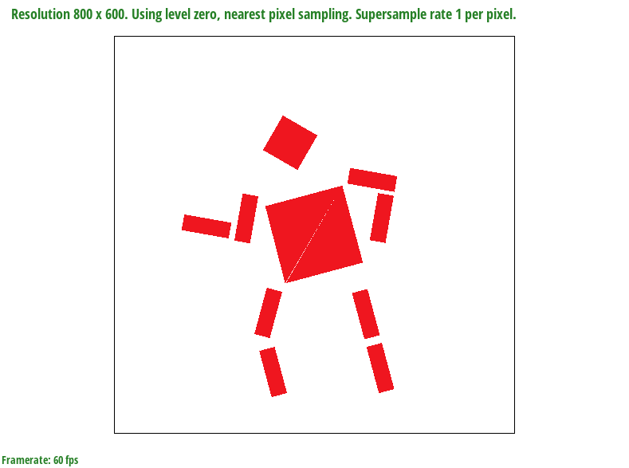
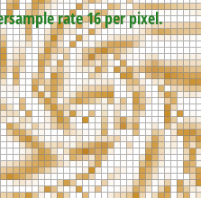

During this assignment we implemented basic rendering of 2D vector images, progressively building on top of previous tasks throughout the assignment. The assignment was seperated in two major parts: Rasterization and Sampling. We first implented filling polygons based on the vertices of the triangles and then provided antialiasing to the edges of these samples for smoother edges. We then implemented transformation (translate, scale, and roate) of polygons within a 2D space. To texture these polygons with basic colors, we implemented Barycentric coordinates to interpolate values across the area of a triangle. Moreover, we implemented triangle coloring that is dependent on a given text and texture coordinates. Finally, we implemented sampling on different mipmap levels.
A naive approach to rasterize triangles is to iterate through a range of x and y coordinates to determine if a pixel is within a triangle. If so, we fill the pixel with the provided color. We bounded our range for filling to the minimum and maximum values of our axis'. If we were given coordinates that were out of the bounds of the screen, we bounded them to 0 or the maximum size of the width or height. Determining if a pixel is in our triangle utilizes the line test.
This test utilizes the vertices of a triangle to determine if a point is within the triangle. Essentially, the triangle is thought of as three half planes where the intersection creates a triangle. To determine if a point is apart of all of the half planes, we utilize the implicit line equaion.
|
|
For a given point \((x,y) \), the point is classified relative to the line as follow: \[L(x,y) > 0 \textit{ above the line}\] \[L(x,y) = 0 \textit{ on the line}\] \[L(x,y) < 0 \textit{ below the line}\] Back to our rasterizaton process, we do this check on all edges that segment our plane. If the Implicit Line Equation test is greater than 0 for all edges, then we can conclude that the point is definitely inside the triangle. But what if the point lies on an edge?
For our implementation, we filled all edges. In other words, when \(L(x,y) \geq 0\) we fill the pixel.
Initially we utilized a range similar to rasterize_point to fill out the triangle.
Since we can fit any shape in a square bounded by the range of the x coordinates and
the range of y coordinates, we can limit our focal point to checking pixels
within this range to avoid pixels that cannot be in our triangle. Our
fill_pixel logic that utilizes only mathematical operations therefore
this should only run at \(O(1) \) time complexity. Therefore our rasterization process
runs at most \(O(MN)\) time complexity where \(M \) is the range of the x axis and
\(N \) is the range of the y axis.
|
|
|
To improve efficiency for our for loops, we utilized
pragma omp parallel for
to parallelize our for loops and iterated through the
y-pixels first instead of the x-pixels to reduce cache misses.
For supersampling, we modified the renderer to include a square root sample rate and half sample dist value
as a class value. Additionally, we now have another fill_pixel function that fills the pixel determined by these two new values.
Finally, we added super sample support to the resolve_to_framebuffer function to
translate the internal buffer of the rasterizer to the screenbuffer. In this function, we get
a range for our buffer and calculates the color for each of our pixels. It then scales the result
by dividing by the sample_rate.
Supersampling creates a better visual representation of our triangle by being less strict on which pixel should be considered in our final rasterization process. This gives the illusion that the edges of our triangle are smoother than what they were using the classification algorithm.
Rather than evaluating each pixel as in or out, we evaluated each pixel multiple times by using the square root sampling rate. The new coordinate becomes \[xp = sx + (1 + 2 \times i) \times (0.5 / square root sample rate) \] \[yp = sy + (1 + 2 \times j) \times (0.5 / square root sample rate) \] where \((xp, yp) \) are the new coordinates we are evaluating, \((sx, sy) \) are the original coordinates, \((i,j) \) are coordinates within our square root sample rate box, and square root sample rate is the given sample rate.
We antialiased our triangles by filling in additional points that follow our square root sample rate.
|
|
|
|
As you can see above, the difference in the photos are very miniscule.
|
|
|
|
Zooming in we can see the antialiasing in action. With 1 pixel sampling, there are jaggies that are unconnected from the main part of the triangle. As we increase the sample rate, the seperation between the outliing pixel and the rest of the triangle becomes more connected with darker pixels as the sampling rate increases. Additionally, the jump from the triangle to the background becomes a lot smoother, having a gradient transition from the color of the triangle to the background.
For our robot, we tried recreating the silhouette similar to the person crossing used for crosswalks.
|

|
|
Barycentric coordinates represent the position of a point relative to 3 other points/vertices. Consider three vertices \(A\), \(B\), and \(C\). Any point \(P\) within the triangle can be represented by non-negative numbers \(alpha (\alpha) \), \(beta (\beta) \), and \(gamma (\gamma) \) such that \(\alpha + \beta + \gamma = 1 \). These letters are meant to represent the weight of each vertice \(A\), \(B\), and \(C\) to reach point P.
For example, if our vector of weights \((\alpha \), \(\beta \), \(\gamma \)) = (1,0,0), our point will be on vertex A since that has the only weight. As seen in the triangle below, the top left corner is the most red but as we get farther from the corner we transition to black.
|
|
If our vector of weights \((\alpha \), \(\beta \), \(\gamma \)) = (1/3,1/3,1/3), our point will be set in the center of the \(ACB \) triangle. As seen in the triangle below, the middle of the triangle is where all the colors are the most homogenous and moving away from the middle starts to flow into each designated color.
|
|
In computer graphics, these points can be positions, texture coordinates, color, normal vectors, material attributes etc. These create better textures as we can have smoother transitions into other triangles, creating an illusion of whole shapes rather than a combination of individual triangles.
|
|
Pixel Sampling is the act of utilizing a subset of pixels to represent the image/vector at a lower resolution. This is done to reduce the size of the file of an image while also maintaining the general quality of the image.
To implement pixel sampling, we needed to modify three functions
Texture::sample_nearest, and
Texture::sample_bilinear.
Texture::sample_nearest
For this function, we mapped the provided \((u,v)\) coordinates from a \([0,1] \times [0,1]\) space to a \( [0, mip.width ) \times [0, mip.height ) \) space. After we bounded these newly rounded values to the size of the mip. We returned the texel of the coordinate of the new mapping.
Texture::sample_bilinear
For this function, we mapped the values of the input vector to the mip width and height then flooring the values to get our sampling integers \((tu, tv) \). To ensure we are not comparing pixel out of bounds, we check that \(tu + 1 \) and \(tv + 1 \) are not reaching out of the width and height of the mip. If we don't we can add another displaced coordinate for our values. For all 4 combinations of the coordinates in our space, we get the texel at that coordinate. To interpolate our neighboring texels, we get the weight for linear interpolation by getting the difference between our mapped floating point value and the rounded integer value. Our weights are: \[s = u - tu \] \[t = v - tv \] We evaluate the linear interpolation using \(s \) for the columns of our \(2 \times 2 \) square first using the equation \[(1 - x)a + xb \] where x is the weight and \(a \) and \(b \) are the coordinates respectively. The values we evaluated from this columns are linearly interpolated with the \(t \) weight. Our returned value is the resulting texture sample.
Nearest Neighbor Interpolation and Bilinear Interpolation are methods of resampling to determine how the cell values of the output raster. Nearest Neighbor Interpolation inherits the value of the nearest pixel in the input image. This method is the quickest but produces very jagged edges. Bilinear Interpolation however uses the weighted average of the four nearest call centers. This method has much smoother transitions between colors but is also more computationally heavy expensive.
|
|
|
|
|

|
The first aspect that stands out between the pixels is how smooth the edges are. The bilinear interpolation sampling has softer edges than the nearest sampling method. However, zooming in and out of the pictures are a lot faster when using the nearest sampling method over the bilinear method. There will be more differences in the two edges when there is a higher frequency of the change between colors and the lines are very thin. This is because bilinear represents more of an average of the represented colors while nearest represents more of an absolute categorization. Additionally, many thin lines means more edges and more edges means more utilization of this sampling.
Level sampling or mipmapping is a rendering optimization technique that computes multiple versions of a texture at different resolution to be used depending on the distance or orientation of the camera faced towards it.
We implemented level sampling by modifying our
RasterizerImp::rasterize_textured_triangle,
Texture::sample, and
Texture::get_level functions.
RasterizerImp::rasterize_textured_triangle
In this function, we find our compute parameters that will be filled in our sampling method. For \((x,y) \), \((x + 1,y) \), and \((x,y + 1) \), we find the barycentric coordinates given these points and the points of the triangle, then multiply each result by the weights provided. The result is passed into our provided sampling method.
Texture::sample
In the sample function, we first calculate the level by the get_level and sp.lsm, and calculate the corresponding color using the psm.
Texture::get_level
In the get level function, we utilized the following function to determine where du/dx and dv/dx is the change in distances from the center point. \[L = max(\sqrt{(\frac{du}{dx})^2 + (\frac{dv}{dx})^2},\sqrt{(\frac{du}{dy})^2 + (\frac{dv}{dy})^2})\] \[D = log_2L \]
Mipmap requires more storage since multiple versions of each texture are stored and accessing multiple different versions of a texture could increase render times.